What if we simplified a map of Earth into a bunch of geometric shapes?
Thats what I am doing today!
But before we start, lets get some guidelines:
1. Only simple geometric shapes
2. As little overlap as possible
3. We are trying to simplify the map, and shapes might not touch each other
Since our map will look rather different based on which map we are using, I am using the first map that came to mind: The Mercador Projection.
North America
North America is rather unusual, since it only has two countries: The United States and Canada.
Lets start by simplifying the USA.
The US is very rounded, almost like a semi-circle. So that is the shape I chose for the US
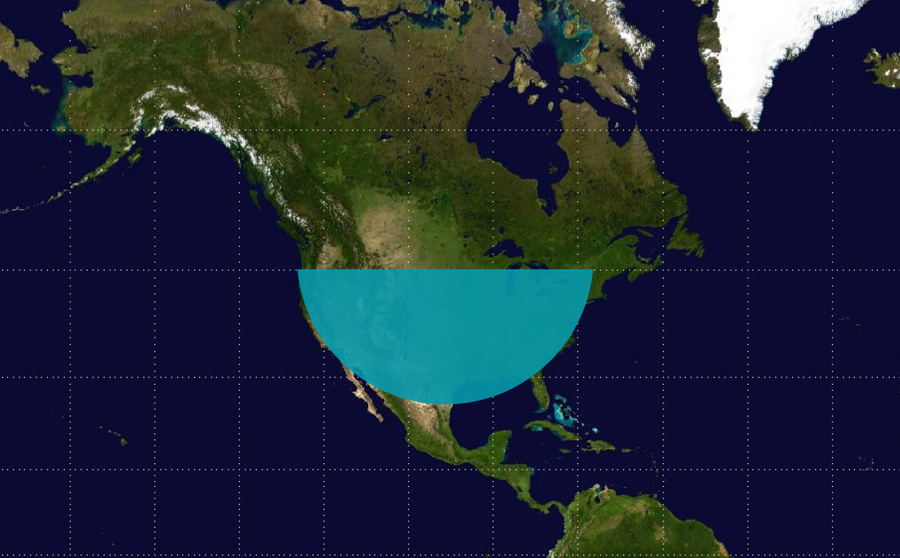
Next we need Canada. Canada is a country with quite a lot of islands. I first placed a long rectangle to fit between the space from the lake to the semicircle that is the US.
Next, we can see a slope, that is similar to a triangle. Canada also has a horn like shape that is on the East side of Canada, which I replaced with two triangles.
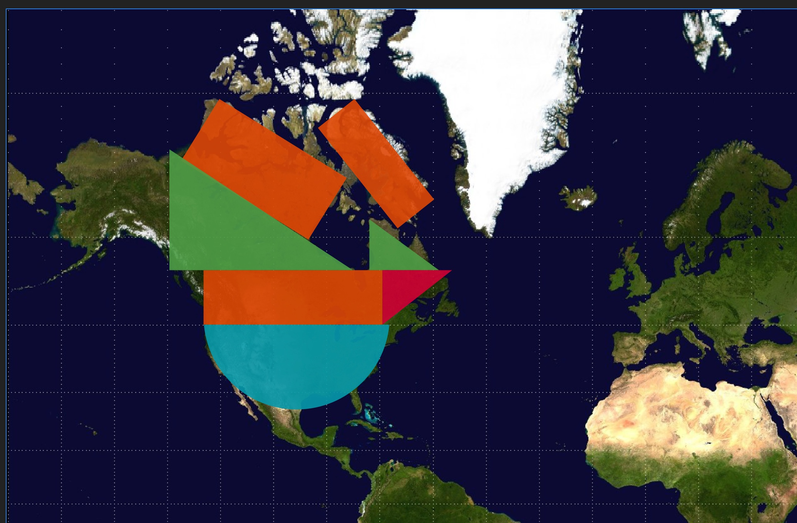
Lets fill in the rest of North America! Alaska can be a semicircle and two rectangles. And we are done with North America!
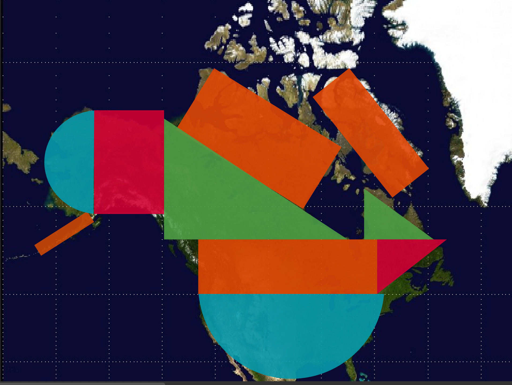
Central America
Central America is made up of Mexico, Panama and the Caribbean. We are not doing the Caribbean since it is quite small, which leaves only those that are in the main land.
Central America can be simified into two triangles.
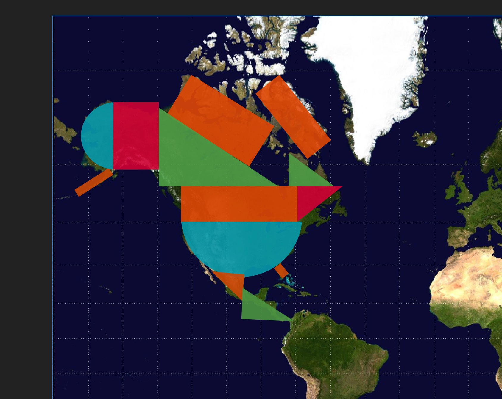
South America
South Ameica has quite a lot of countries. Like Africa, it has a tip, which can be a triangle. It also has a slope which leads into Central America which can be a triangle.
The rest of the space can be filled with a triangle and a rectangle.
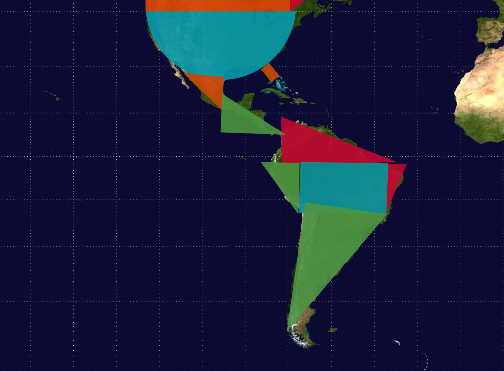
We did not forget about Greenland! Since it is quite a simple shape, we can just use a triangle.
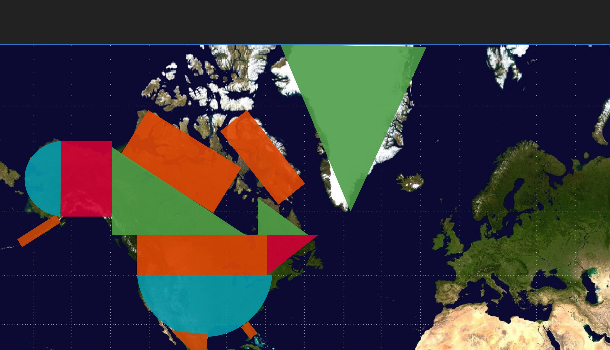
Europe
Compared to the Americas, Europe is quite small. Spain can be a square connected to the mainland with triangles. This then connects to a rectangle which makes up majority of the land above the alps.
Italy and Greece can both be triangles. The UK and Scottland can be a triagle and square, while the Nordics can be a rectangle. The Kola Peninsula can also be a rectangle.
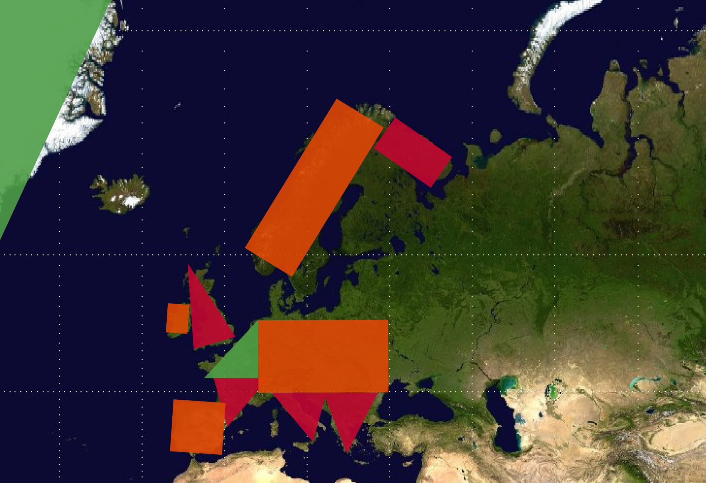
Russia is quite big can be three rectangles and a triangle as a hat.
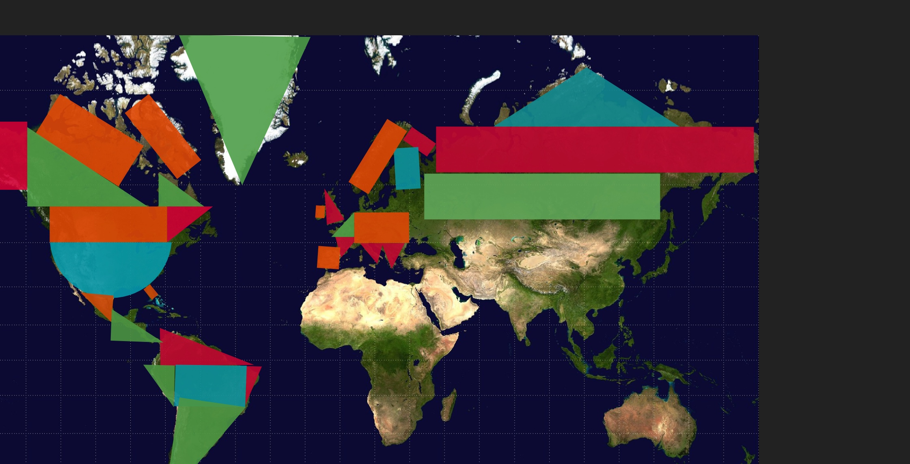
Middle East
The Middle East is shapes like a boot, so I made that using two rectangles. We connected it with our Europe with a rectangle for Turkiye and a triangle for Russia, Georgia, Armenia, and Axerbaijan.
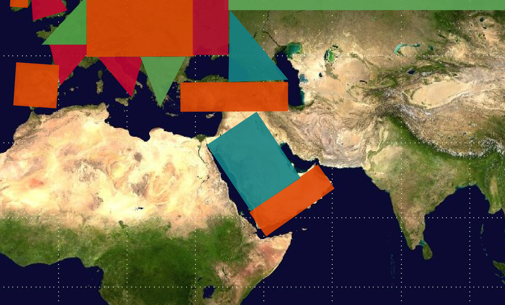
Africa
Africa is the a big continent with many many countries. Firstly, there is a semicircle on the West Side of Africa, A huge rectangle which covers most of the Sahara, and triangle for Egypt.
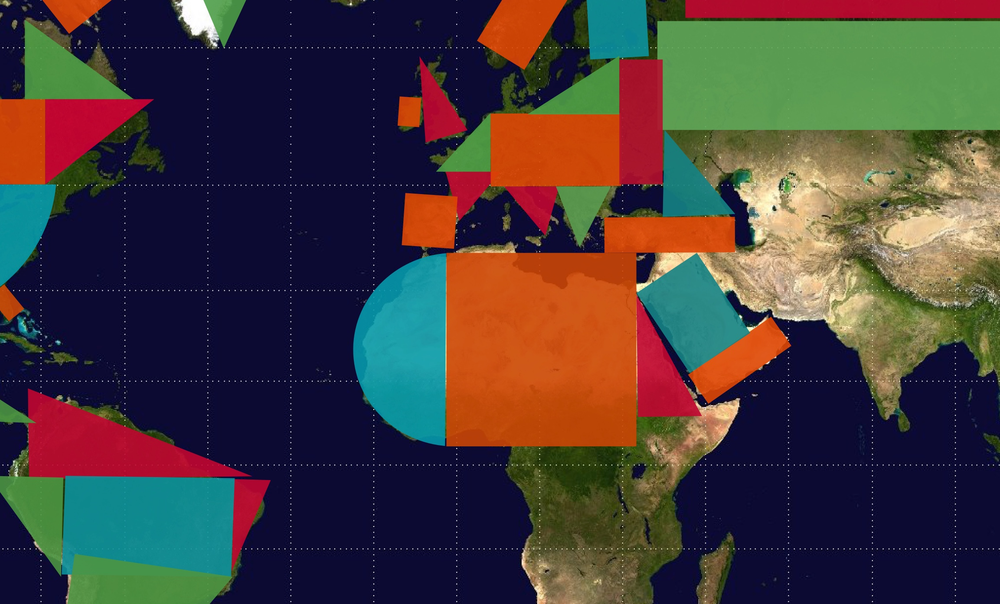
The rest can be filled in, with the triangle as a tip, an oval for Madagascar, and a triangle for the Horn of Africa.
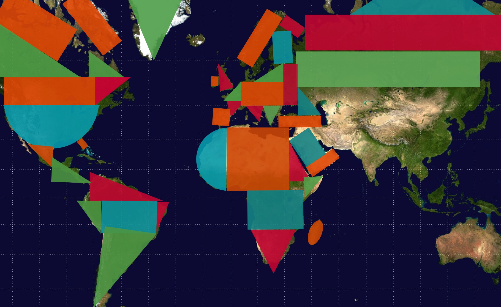
Asia
India is a triangle, while most of the countries in Central, South and East Asia can be one big rectangle. China can have a semicircle on its East side and we can add a triangle, a rectangle and a semicircle for Myanmar, Laos, Thailand, Cambodia and Vietnam.
Japan can also be a semicircle, and Korea can be a rectangle. We will also finish up the tip on Russia with triangles.
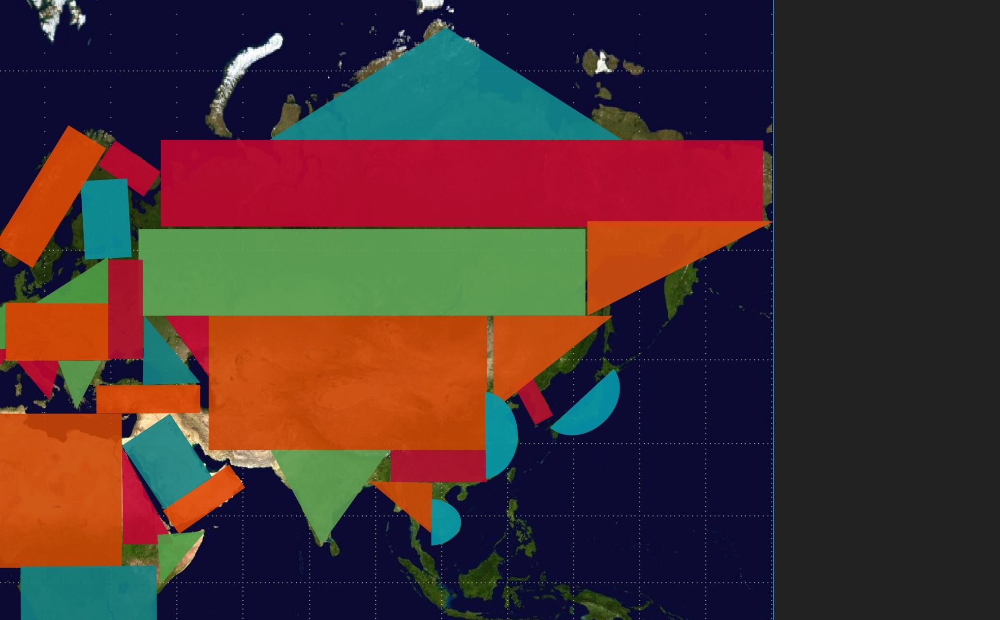
Southeast Asia
Southeast Asia is mostly islands, so we will have to take some liberties with showing its shape. We can make the rest of Thailand and the some parts of Malaysia into a rectangle which extends down to the Strait of Malacca. Sumatra can be a rectangle, so as Java. Borneo is quite a weird shape, and I made it a circle. The Philippines and Sulawesi can both be rectangles. Papua and Papua New Guinea can be two triangles with a rectangle.
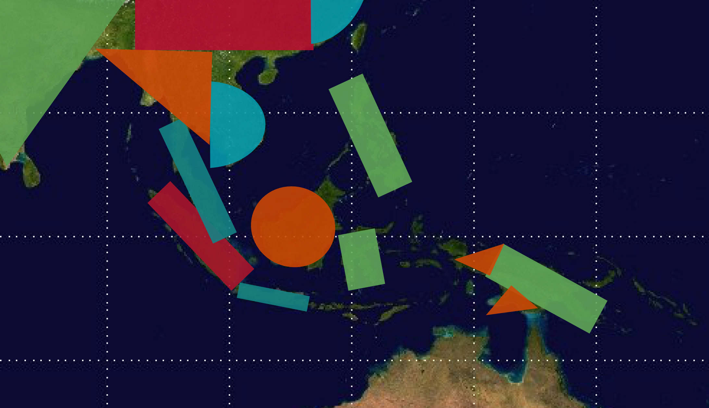
Oceania
Australia has quite a complex shape. We can put a semicircle on the East, with two triangles on the North. A triangle connects the semicircle to a square, which is tilted. Tasmania can be a semicircle, and New Zealand can be a rectangle.
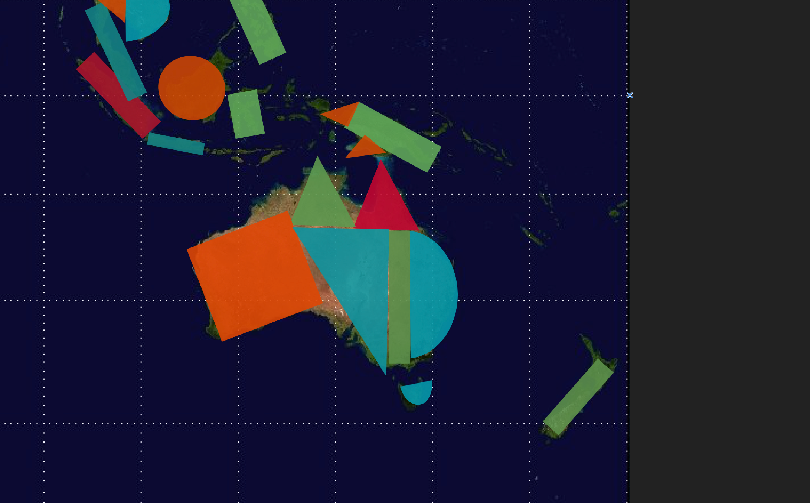
Antarctica
Don't forget about Antarctica! It isn't complicated, due to being so distorted in the projection. Antarctica can be two rectangles, and two triangles.
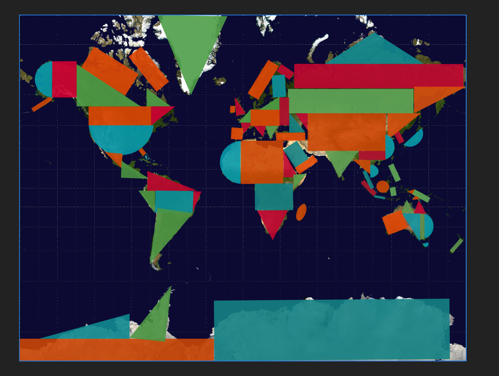
Result
With all continents simplified, lets sit back and admire our work!
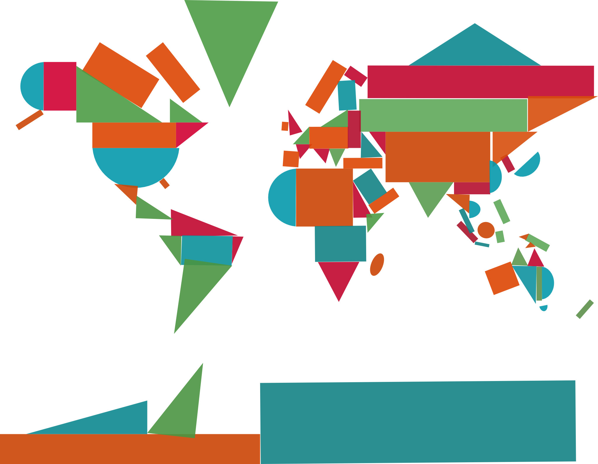
We have created a beautiful and colorful map! wait... Why did we do this again?